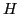

We consider the coupled problem with Stokes flow in two subdomains separated by an interface. At the interface, continuity of the velocity and the momentum balance condition for the stress tensor needs to be imposed. The interface is characterized by a level set function which satisfies an appropriate transport equation.
In a first part we explain how an approximation of the interface can be constructed with iteratively found points controlling the curvature which appears in the momentum balance condition.
After that we present how the stationary Stokes problem can be written as a first order system where the least squares functional on the exact domain is proved to be elliptic. For numerical results a combination of

(div)-conforming Raviart-Thomas and standardFinally we analyze the effect of approximated flux boundary conditions on Raviart-Thomas finite elements in order to get the effect of the approximated interface and curvature on the momentum balance condition. In particular, we found an estimate for the normal flux on interpolated boundaries.